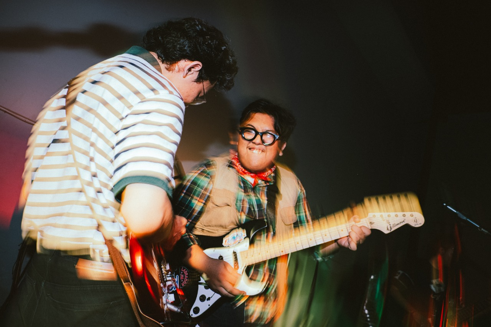
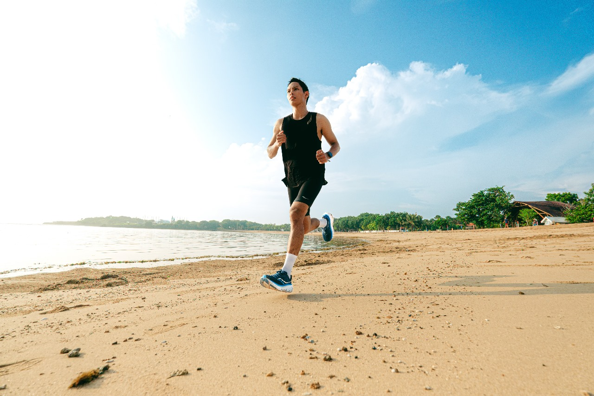
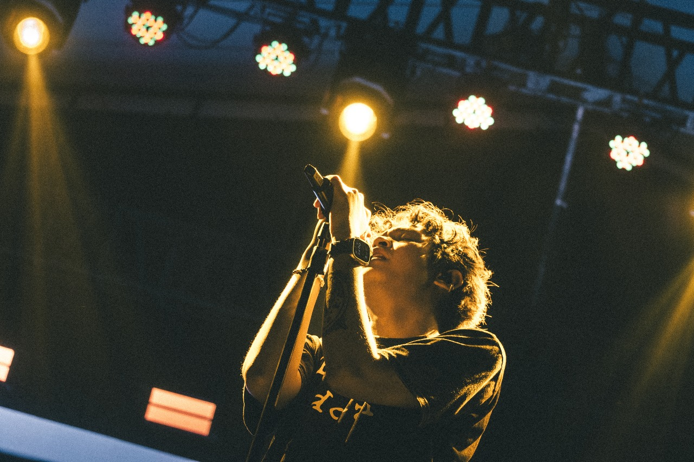
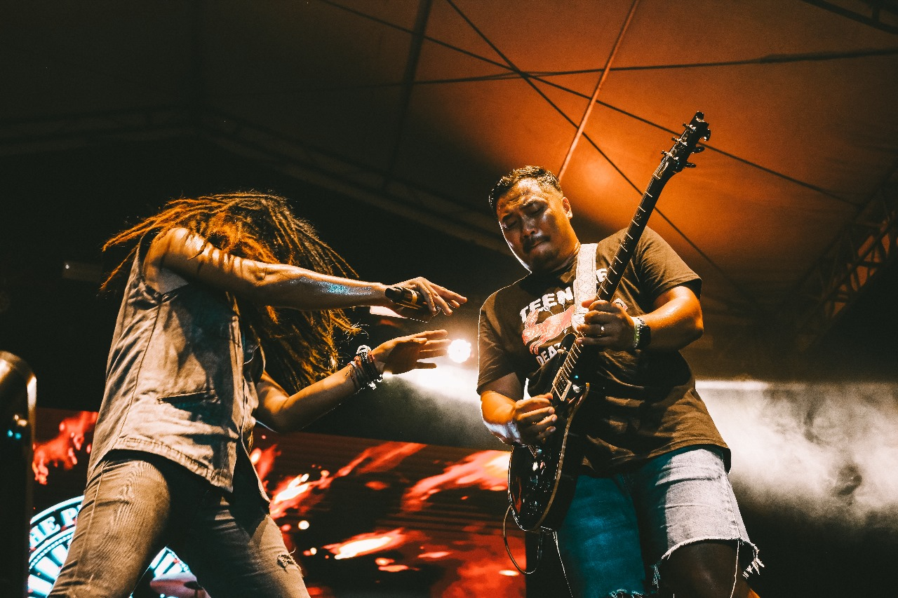

Berlayar bersama Fluctus di SBMC 2024

24 Februari 2024, saya berkesempatan untuk mendokumentasikan band FLUCTUS,
sebuah band bergenre Surf Rock yang dibentuk pada tanggal 20 April 2023 dari Pulau Dewata Bali, Denpasar.
Perhelatan kali ini diadakan oleh STIKOM Bali, dalam rangka SBMC Anniversary ke-15.
Campaign for Saucony Indonesia

24 Februari 2024, melakukan pemotretan untuk sebuah brand Olahraga, yaitu Saucony Indonesia.
Pada sesi ini kami mempromosikan lini Saucony Guide dan Saucony Endorphin Pro.
Makna Festiva Chapter #2

14 Januari 2024, kembali ke kampung halaman, untuk menangkap momen konser.
Makna Festiva 2024 dimeriahkan oleh beberapa artis nasional ternama seperti Nadin Amizah, Tiara Andini, .feast, dan Hindia.
Acara yang diadakan 2 kali dalam satu tahun ini, pada kali ini bertempat di Lapangan Riau Garden, Kota Pekanbaru.
Volkswagen Lost In Paradise #5 2023

28 Desember 2023, berkesempatan untuk melakukan dokumentasi pada salah satu Festival Volkswagen berskala Nasional dan terbesar di Bali.
Konsep VLIP tahun ini sedikit berbeda, kegiatan Klub VW ini biasanya melakukan touring disekitar pulau Bali, namun kali ini acara VLIP berubah menjadi konsep
Festival. Dimana VLIP Fest mengkolaborasikan festival otomotif dan musik.